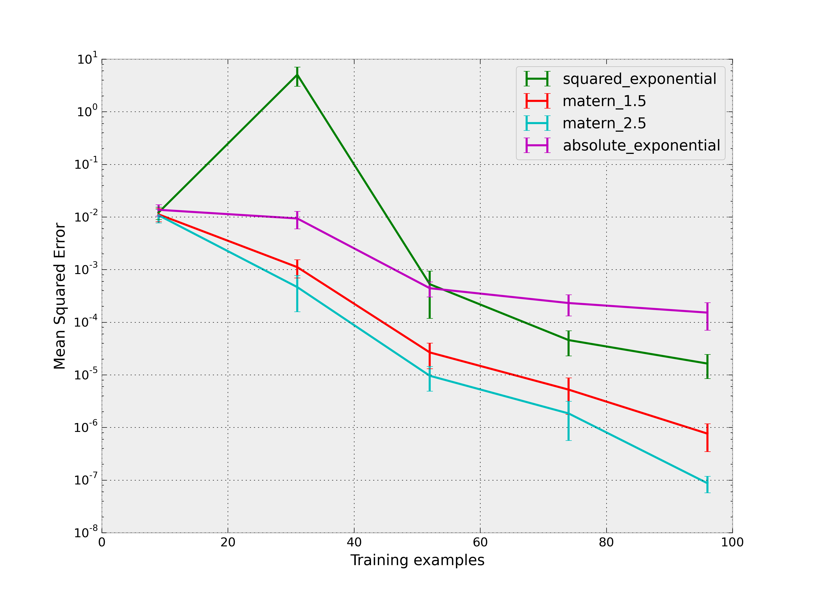

Gaussian Process regression with four different variants of the Matern kernel is compared (for activ=dx.T * M * dx and M being a covariance matrix of size n*n encoded in theta):
- The Matern kernel for nu=1.5: r(theta, dx) = (1 + np.sqrt(3*activ))*exp(-np.sqrt(3*activ))
- The Matern kernel for nu=2.5: r(theta, dx) = (1 + np.sqrt(5*activ) + 5/3*activ)*exp(-np.sqrt(5*activ))
- The absolute-exponential kernel which corresponds to a Matern kernel with nu=0.5
- The squared-exponential kernel which corresponds to a Matern kernel for the limit of nu becoming infinitely large
The target function is a twice differentiable function which is created by fitting a spline to randomly sampled data over the interval [0, 10]. The squared-exponential kernel is expected to be too smooth for this function while the absolute-exponential kernel is typically too rough.
See Rasmussen and Williams 2006, pp84 for details regarding the different variants of the Matern kernel.
Python source code: plot_matern_kernel.py
print(__doc__)
# Author: Jan Hendrik Metzen <jhm@informatik.uni-bremen.de>
# Licence: BSD 3 clause
import numpy as np
from scipy.interpolate import InterpolatedUnivariateSpline
from scipy.stats import sem
from sklearn.learning_curve import learning_curve
from skgp.estimators.gaussian_process import GaussianProcess
import matplotlib.pyplot as plt
np.random.seed(0)
# Generate a twice-differentiable target function by fitting a spline to
# random data points
xt = np.linspace(0, 10, 10)
yt = np.random.random(10)
f = InterpolatedUnivariateSpline(xt, yt, k=2)
# Train GaussianProcesses with squared-exponential and Matern (nu=2.5)
# correlation models and plot resulting predictions
x = np.random.uniform(0, 10, 25)
y = f(x)
gp_matern = GaussianProcess(corr="matern_2.5", theta0=1e-1, thetaL=1e-2,
thetaU=1e1).fit(x[:, None], y)
gp_se = GaussianProcess(corr="squared_exponential", theta0=1e-1, thetaL=1e-2,
thetaU=1e1).fit(x[:, None], y)
gp_ae = GaussianProcess(corr="absolute_exponential", theta0=1e-1, thetaL=1e-2,
thetaU=1e1).fit(x[:, None], y)
xp = np.linspace(0, 10, 100)
plt.figure(0)
plt.scatter(x, y, c='k', s=100)
plt.plot(xp, f(xp), label="True", c='b')
plt.plot(xp, gp_se.predict(xp[:, None]), label="squared_exponential", c='g')
plt.plot(xp, gp_matern.predict(xp[:, None]), label="matern_2.5", c='r')
plt.plot(xp, gp_ae.predict(xp[:, None]), label="absolute_exponential", c='m')
plt.legend(loc='best')
# Plot learning curve of GaussianProcess for different correlation models
x = np.random.uniform(0, 10, 100)
y = f(x)
plt.figure(1)
colors = ['g', 'r', 'c', 'm']
for i, corr in enumerate(["squared_exponential", "matern_1.5", "matern_2.5",
"absolute_exponential"]):
train_sizes, train_scores, test_scores = \
learning_curve(GaussianProcess(corr=corr, theta0=1e-1, thetaL=1e-3,
thetaU=1e1),
x[:, None], y, scoring="mean_squared_error", cv=25,
n_jobs=4)
test_scores = -test_scores # Scores correspond to negative MSE
plt.errorbar(train_sizes, np.mean(test_scores, axis=1),
sem(test_scores, axis=1), color=colors[i], label=corr)
plt.xlabel("Training examples")
plt.ylabel("Mean Squared Error")
plt.legend(loc='best')
plt.yscale('log')
plt.show()
Total running time of the example: 3.32 seconds ( 0 minutes 3.32 seconds)